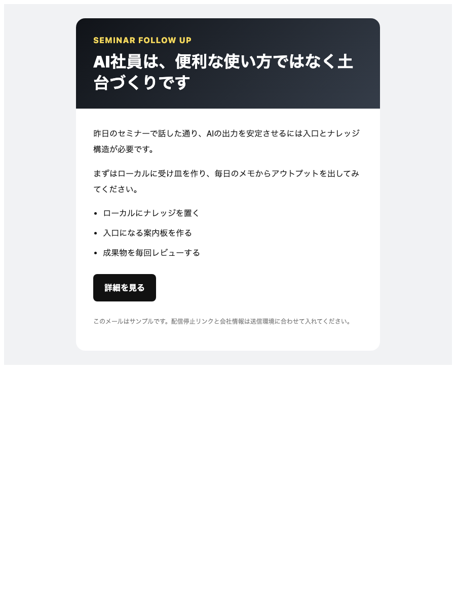
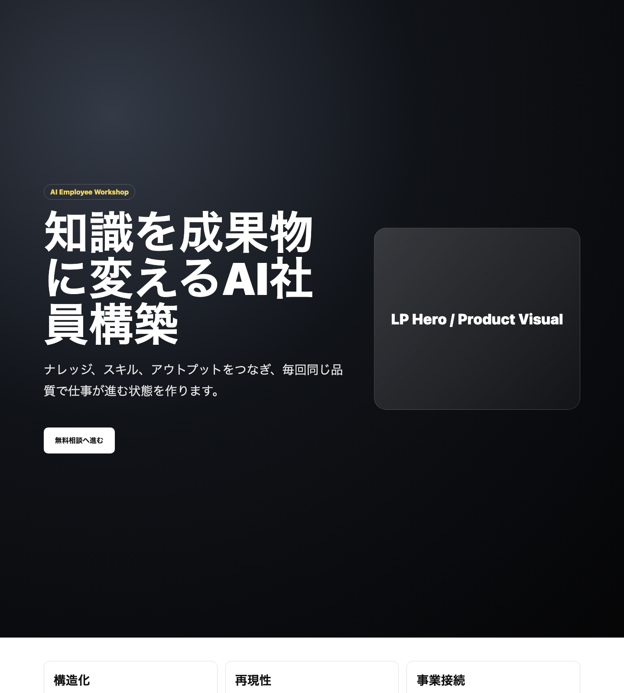
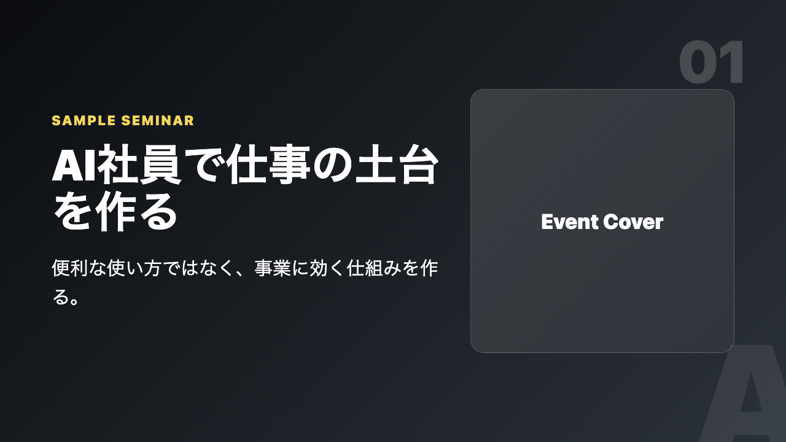
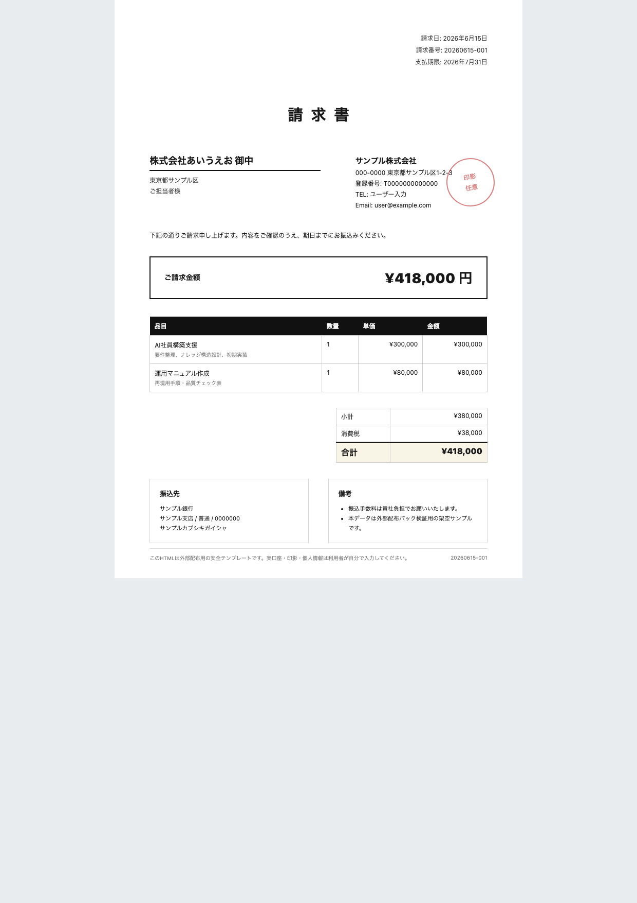

◀
▶
アイウエオ
SHOCKING FACT / まず、この数字から
68
%
中小企業のAI活用は、
3ヶ月以内に止まる
「使い方」を学んでも、「続く仕組み」を作っていないからです。
出典: 株式会社アイウエオ 導入前ヒアリング 2026（n=50・モデルケース）
アイウエオ
CHECKLIST / 心の中でチェック
いくつ当てはまるか、
数えてください
月末の請求書づくりに、半日消える
毎月同じ作業。でも毎月ゼロから
議事録は「録って満足」、活用ゼロ
録音データが墓場行きになっている
SNS発信は、3日坊主をくり返す
続かない自分を責めて終わる
提案書は、前回のコピペ改造
社名の消し忘れにヒヤッとしたことがある
問い合わせの返信が、翌日以降になる
早く返した1社だけ受注率が高い
マニュアルは「自分の頭の中」にある
休むと会社が止まる状態
3つ以上
今日の90分で「返し方」まで持ち帰れます
アイウエオ
LOSS COUNTER / 見えない損失
その手作業、
年間いくら
捨てているか
¥
1
,
2
4
8
,
0
0
0
1人あたり・1年で消えている人件費（手作業を放置した場合）
毎日45分の手作業
×
年250日
×
時給2,500円換算
しかもこのカウンターは、来年もゼロに戻りません。
アイウエオ
VOICES / 導入前に聞いた声
現場の声は、
こうでした
“
ツールは入れたんです。でも気づいたら、誰も開かなくなっていた。
導入を決めた私が、いちばん使っていない
んですよ。
卸売業・従業員12名・代表
“
結局、
自分でやったほうが早い
。教える時間がいちばんもったいない。
制作業・従業員5名・代表
どちらも「導入後」ではなく「導入前」の声。原因は同じ1つです。次で1枚にします。
アイウエオ
VICIOUS CYCLE / 忙しさの正体
「忙しい」が、
忙しさを再生産
する
1
目の前の仕事で手一杯
2
仕組み化は「あとで」
3
全部、手作業のまま
4
もっと忙しくなる
悪循環
このループ、気合いでは切れません。意思で変えられる場所は1つだけ。
②「あとで」を「先に」へ
裏返すことです。
今日は ② に切り込みます
アイウエオ
3 MYTHS / 先に誤解を解く
その常識、
3つとも誤解
です
誤解 1
MYTH
「AIは大企業のもの」
✓
少人数ほど、効きます
1人が何役も兼ねる会社ほど、1人あたりの削減効果が大きい。
誤解 2
MYTH
「専門人材がいないと無理」
✓
要るのはIT力より言語化
自社の仕事を説明できる人が最強。それは現場のあなたです。
誤解 3
MYTH
「まだ様子見が安全」
✓
待つほど「型の差」が開く
先に始めた会社には、使うほど賢くなる型が貯まっていきます。
誤解が解ければ、残るのは「順番」の問題だけです。
アイウエオ
COST OF WAITING / 年換算
「またあとで」を、
年に換算
すると
毎日の手作業
1日 45分
「これくらい」の量
× 22営業日
月 16.5時間
丸2日ぶんの労働
× 12ヶ月
年 198時間
約25営業日ぶん
時給2,500円換算
約49.5万円
1人あたり・毎年
年198時間 ＝ 約1ヶ月ぶん働いて、
何も積み上がっていない
のと同じ
試算はモデルケース。自社の分数に置き換えて計算してみてください。
アイウエオ
CROSSROADS / 分かれ道
ここから先、道は
2つ
しかありません
ROUTE A
このまま手作業
1年後も、同じ悩み
ROUTE B
仕組みに変える
今日から、型が貯まる
YOU ARE HERE / いま、ここ
どちらも選べます。ただし
戻る道は、年々長くなる
。
アイウエオ
FIND THE PROBLEM / 誌上添削
毎日のメールが
読まれない理由
、ここです

1
2
3
1
件名が「お知らせ」— 開く理由がない
相手の得を件名の先頭に。開封はここで決まる
2
結論が最後 — 3行目までしか読まれない
1行目に要件。理由や経緯は後ろでいい
3
お願いが3つ — 相手は1つも動けない
1通1アクション。残りは次のメールに分ける
AI社員には、この添削ルールごと覚えさせます
アイウエオ
STRUCTURE / 全体は3層
仕組みは
3層
。作るのは、下から
判断
型（手順・お手本）
スキルとアウトプットの置き場
文脈（前提・事例）
会社のことを貯める土台
人がやる
AI社員が使う
最初に作る場所
第3層｜判断
決めるのは、人
価格・方針・最終OK。ここはAIに渡しません。
第2層｜型
手順とお手本を貯める
やり方が型になると、品質が毎回そろいます。
第1層｜文脈
会社の前提を貯める
ここが薄いと、上の2層は全部崩れます。
崩れる会社は、例外なく「上から」作っています。
アイウエオ
MATRIX / 渡す仕事の選び方
狙うのは
右上
だけ。全部やらない
人の勝負どころ
無視でいい
ついでに自動化
今日から渡すゾーン
議事録→ToDo化
月次の請求書
SNSの下書き
商談・交渉
新規の企画
たまの雑務
定型の返信
時間を食う ↑
型にしやすい →
右上＝時間を食う × 型にしやすい
ここだけで、たいてい
月30時間
が浮きます。左上は人の腕の見せどころなので、渡しません。
あとでやるワークで、自分の仕事をこの図に置いてもらいます。
アイウエオ
ROADMAP / 8週間の全体地図
作る順番は、
3段
だけ
1
土台を貯める
W1-2
いまの作業を全部書き出す
前提・事例を1か所に集める
判断基準をメモに落とす
2
型にして任せる
W3-6
仕事を1つ選んで手順化
お手本つきでAI社員へ
日次で回して型を磨く
3
導線につなぐ
W7-8
成果物を売上導線に載せる
数字で振り返る
2つ目の仕事を追加する
今日
2週目｜土台完成
6週目｜AI社員が稼働
8週目｜導線接続
1段目を飛ばした分だけ、2段目でやり直しが発生します。
アイウエオ
GEARS / 部署のかみ合わせ
1つ回すと、
全部が回り出す
集客
見込みを集める
営業
提案を届ける
制作
成果物を出す
起点はここ1つでいい
バラバラのツール導入は、
歯が合わない歯車
。どれだけ回しても隣に伝わりません。
同じ
文脈基盤
の上に載せた瞬間、かみ合って連鎖し始めます。
回すのは、あなたではなくAI社員
アイウエオ
FUNNEL / 売上の分解図
売上は、
4つの数字
でできている
認知 1,000人
興味 300人
相談 40人
受注 8社
月間のモデルケース
認知→興味｜30%
発信の「量」で決まる段。
AI社員が毎日下書き
を量産して支えます — 今日の主戦場
興味→相談｜13%
受け皿の設計で決まる段。LP・特典・予約導線を型で用意
相談→受注｜20%
提案の質で決まる段。事例と提案テンプレで底上げ
感覚で頑張らない。
細い段だけ
直します。
アイウエオ
LEVERAGE / てこの原理
週2時間で、
月40時間
を持ち上げる
こっちが持ち上がる
月40時間の
作業
資料・発信・事務
あなたの実働
週2時間の
仕込み
あなたが押すのは、ここだけ
支点 ＝ 型（手順とお手本）
支点（型）がないと、同じ週2時間は、ただの残業になります。
アイウエオ
ICEBERG / 仕事の水面下
見えている仕事は、
2割
だけ
2割
見えない仕事 8割
見える仕事＝成果の瞬間
水面＝お客様から見える線
段取り・準備
確認・修正
探し物・転記
水面下の8割は、誰にも評価されないまま、毎日の時間を食い潰します。
そして
毎回ほぼ同じ手順
。つまり——
水面下の仕事ほど、型にしやすい。
AI社員に渡すのは、まずここ。
「忙しいのに成果が見えない」の正体＝水面下の8割。
アイウエオ
TODAY'S FORMULA / 今日の公式
残る時間は、
この式
で決まる
残る時間
判断と挑戦に使える時間
=
任せる量
AI社員に渡した仕事の数
×
型の精度
手順とお手本の質
−
教え直し
毎回ゼロから説明するコスト
みんな左の2つばかり見て、
「− 教え直し」で挫折
します
この引き算を消す装置が「文脈基盤」。次の章で作り方をやります。
アイウエオ
GROWTH CYCLE / 育成ループ
5歩で1周。
回すたびに賢くなる
AI社員
育成サイクル
1周＝1週間
1
仕事を1つ渡す
2
下書きが返る
3
人が直す
4
直しを型に足す
5
次は、もっと上手い
肝は
④ 直しを型に足す
。ここをサボると、毎週①からやり直しです。
④さえ守れば、同じ指示でも返ってくる質が毎週上がります。
1周目 60点 → 4周目 90点
受講12社の体感平均（モデルケース）
アイウエオ
BUILDING BLOCKS / 積む順番
同じ部品でも、
順番
で結果が変わる
よくある積み方｜応用から
高度な自動化
ツール契約
土台なし
✕ 頭でっかち。3ヶ月で崩れる
正しい積み方｜土台から
自動化・応用
仕事の型
文脈の土台（前提・事例）
○ 上に載せるほど、安定する
崩れた会社は部品（ツール）のせいにします。ほんとうは、順番のせいです。
アイウエオ
TRACK RECORD / 覚える数字は3つ
結果は、
3つの数字
に出ています
12
社
AI社員の導入企業
全社が8週間以内に稼働開始
40
時間
月に手放した作業／社
導入8週間後の平均値
92
%
6ヶ月後の継続率
「使い続けている」割合。作って終わりにしない
集計: 株式会社アイウエオ 導入企業アンケート 2026年上期（モデルケース）
アイウエオ
GROWTH TIMELINE / ある1社の12ヶ月
成果は、
階段状
に伸びる
1〜3ヶ月
4〜6ヶ月
7〜9ヶ月
10〜12ヶ月
3ヶ月目
月8時間が戻る
議事録・請求書を移管
6ヶ月目
月22時間が戻る
発信と提案書も移管
9ヶ月目
売上導線が接続
問い合わせが月2倍に
12ヶ月目
月40時間＋売上1.4倍
空いた時間で新商品を開発
伸び始めるのは3ヶ月目から。型が貯まるまでの最初の3ヶ月が、いちばんの分かれ目です。（1社の記録・モデルケース）
アイウエオ
CASE STUDY / 2社の8週間
業種が違っても、
手順は同じ
事例 A
製造業・従業員8名
課題
見積・請求・納期連絡で、毎月まる3日が消えていた
やったこと
W1-2で文脈基盤 → W3-6で事務担当のAI社員を構築
8週間後
事務作業 月34時間 →
月6時間
。浮いた時間で新規開拓を再開
事例 B
士業事務所・3名
課題
集客が紹介頼み。発信はゼロ、HPは3年放置
やったこと
発信担当のAI社員が週5本下書き → 所長は選んで直すだけ
8週間後
問い合わせ 月2件 →
月9件
。紹介以外の入口が育った
違うのは扱う仕事だけ。「土台 → 型 → 導線」の順番は、2社とも同じです。（モデルケース）
アイウエオ
VOICES / 受講生の声
声は、
そのまま
置いておきます
A
製造業・代表
50代
月34時間削減
「パソコン仕事は全部苦手。それでも8週間で回り始めました。恐る恐る渡した請求書づくりが、いまでは一番の戦力です。」
B
士業事務所・所長
40代
問い合わせ4.5倍
「紹介頼みの営業から、やっと卒業できました。発信が止まらない事務所は強い——それを数字で実感しています。」
C
小売業・店長
30代
発信 週5本
「閉店後に残ってやっていたSNSがなくなりました。朝、下書きから選ぶだけ。営業中はお客様に集中できます。」
D
研修業・代表
40代
提案書 半日→40分
「『型に落とす』という発想がありませんでした。提案書の品質が、書く人に依存しなくなったのが一番の変化です。」
受講生アンケートより原文掲載（個人の感想・モデルケース）。共通点は「特別な人がいない」ことです。
アイウエオ
MEDIA & STAGES / 登壇・掲載
外の場でも、
同じ話
をしています
登壇
サシスセソ EXPO
TRADE SHOW 2026
マミムメモ商工会議所
KEIEI SEMINAR
ヤユヨ大学
OPEN LECTURE
ハヒフヘホ Bizサミット
KEYNOTE
掲載・出演
月刊カキクケコ
MAGAZINE
タチツテト新聞
NEWSPAPER・経済面
ナニヌネノ経営オンライン
WEB MEDIA
ラリルレロTV
「朝の経済」出演
登壇テーマは、いつも同じ。「
作業を消して、判断を残す
」
※媒体名はすべて架空のサンプルです。自社の登壇・掲載実績ロゴに差し替えて使ってください。
アイウエオ
BEFORE → AFTER / 週あたりの作業時間
3つの仕事が、
ここまで軽くなる
10h
8h
6h
4h
2h
9h
2h
資料づくり
6h
1h
発信・SNS
5h
1.5h
事務・請求
導入前（12社平均）
導入8週間後
3つ合計（週）
20h →
4.5h
導入企業12社の平均・自己申告（モデルケース）。ゼロにはなりません。「確認する時間」は残ります。
アイウエオ
CONSISTENCY MAP / 発信の継続密度
「続いている」が、
ひと目で分かる
月
火
水
木
金
土
日
5週目｜AI社員を導入
W1
W4
W8
W12
発信少ない
多い
前半4週は、気合いで頑張った期間。
それでも空白だらけ
です。5週目からは、AI社員が毎朝下書きを置く仕組みに変えました。
発信 月4本 →
月26本
受講企業1社の発信ログ（12週間・モデルケース）。続いているのは根性ではなく、仕組みです。
アイウエオ
OUTPUT WALL / 8週間の成果物
手を動かさずに、
これだけ生まれる

集客LP

提案デッキ
案内メール

請求書
127
本
8週間の成果物
セミナー資料
ステップ配信
キャンペーンLP
見積書
この壁の全部が、
AI社員の下書き
から生まれています。
人がやったのは「選ぶ」と「直す」だけ
1本あたりの実働は平均12分
型があるから、品質は毎回同じ
1社・8週間の実物サンプル（社名等は差し替え済みのモデルケース）
アイウエオ
THIRD-PARTY REVIEW / 第三者の評
手前味噌の代わりに、
外の言葉
を
“
“
属人化に悩む中小企業への処方箋として、再現性が際立つ。
ツール紹介ではなく
「仕組みの作り方」
を教えている点が、
他のAI講座と一線を画す。
カキクケコ経営研究所
主席研究員の誌面評より
月刊カキクケコ 2026年5月号・特集「AIと中小企業」
※媒体・コメントは架空のサンプル。実際の推薦コメントに差し替えて使ってください。
アイウエオ
第2章 まとめ
覚えるのは、
3つだけ
で合格
1
AIが続かないのは、道具ではなく「貯める場所」の問題
賢さ比べは、もう終わっている
2
仕組みは3層。作る順番は、必ず下（文脈）から
上から作った会社は、3ヶ月で崩れる
3
渡す仕事は「時間を食う × 型にしやすい」の右上から
全部渡そうとしない。まず1つ
NEXT
次の章 →「では、その土台をどう作るか」を実演します
アイウエオ
2
3
NEXT 10 MINUTES / 次章予告
次の10分で、「自社でどう作るか」が
見えるようになります
1
実際の構築画面を見せます
2
作る順番の地図を渡します
3
失敗3パターンを先に潰します
いちばん実務的な章です。休憩なしでこのまま行きます。飲み物だけどうぞ。
アイウエオ
WORK / この後すぐやります
ワーク②の
進め方
（先に説明します）
5:00
お題
自分の仕事を1つ、
AIに渡すとしたら？
さっきのマトリクスで「右上」に置ける仕事から選ぶ
ここまで言えたら合格
「◯◯の仕事を渡す。お手本は△△の3枚」
1
正解はありません。
思いついた仕事でOK
2
欲張らない。
1つだけ
選ぶ
3
詰まったら
隣の人と相談OK
（オンラインはチャットへ）
次のスライドに変わったら、スタートです
時間は5分
アイウエオ
Q&A TIME / いったん止まります
ここまでの
質問
、受け付けます
Q.
「初歩的すぎるかな」という質問ほど、全員のためになります。
手
その場で挙手
マイクをお持ちします。社名は名乗らなくてOK
文
チャットに書く
匿名OK。読み上げてこの場で答えます
後
あとで聞く
言いにくい内容は、終了後のアンケート欄へ
この場で答えられない質問は
宿題として持ち帰り、翌日メールで全員に回答
します。
アイウエオ
SURVEY / 回答1分
最後に、今日の
通信簿
をください
FORM
本日の講座アンケート（全2問）
Q1. 今日の内容は、役に立ちそうですか？
まだ
とても
Q2. 次回、聞きたいテーマは？（自由記述）
1
回答は
1分
で終わります（匿名）
2
次回の内容に
そのまま反映
します
3
お礼に
今日の全スライドPDF
をお送りします
いま、この場で
example.com/aiueo-survey
※実際のQRに差し替え
辛口も歓迎です。次回の改善にしか使いません。
アイウエオ
その作業は、本当に
「
あなたがやるべき仕事
」ですか。
— 3秒だけ、考えてみてください —
アイウエオ
MY FAILURE / 正直な話
私も最初の3ヶ月、
全部失敗
しました
✕
ツールを10個契約 → 半年で全部解約
月6万円だけ払って、社内には何も残らなかった
✕
「完璧なマニュアル」作りから着手
2週間で挫折。1ページも使われないまま
✕
いちばん難しい「商談」から自動化
人の勝負どころに挑んで、玉砕
遠回りして分かったこと
「小さく、1つ」が
いちばん速い
簡単な仕事1つ × お手本3枚。ここから始めた12社は、全社が8週間で回りました。
私が失った時間
約210時間
→ 皆さんはスキップ可
左の3つは、そのまま「やらないことリスト」として持ち帰ってください。
アイウエオ
TAKE NOTE / 手を動かす30秒
ここだけは、
手でメモ
してください
作業を渡すな、
仕事を渡せ
。
作業単位＝指示が無限に要る ／ 仕事単位＝段取りごとAIが持つ
← 自社なら？を1つ書き足す
スクショより、手で書いた1行のほうが翌週も残ります。書けた方から顔を上げてください。
アイウエオ
REWIND / 冒頭の問いへ、巻き戻します
開始5分に、お見せした質問
1年後も、いまの作業を
自分の手で続けますか？
90分前のあなた
「……たぶん、はい」
いまのあなた
「いいえ。渡し方が分かった」
この答えの差が、今日の持ち帰りです。次のスライドで、最初の一歩を確定させます。